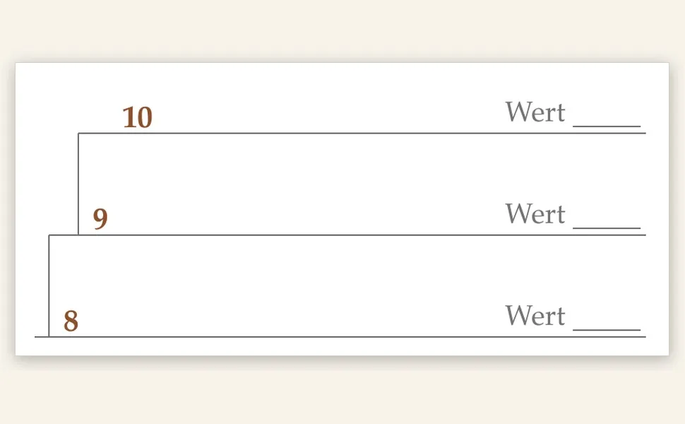
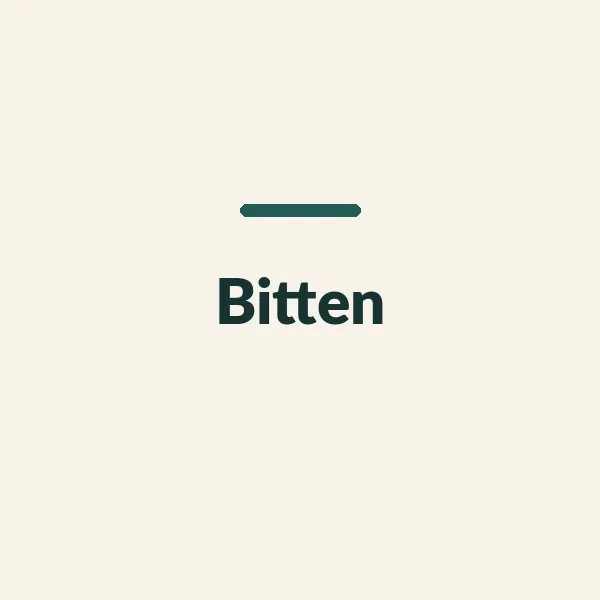

Stück für Stück zu mehr Selbstvertrauen
Ein Stufenplan für Erwachsene: vom „Das kann ich nicht“ zum „Ich probier’s“.
Öffnet amazon.de in einem neuen Tab.
Du sitzt in einer Besprechung und weißt die Antwort, sagst aber nichts.
Du gehst arbeiten, kümmerst dich um deine Leute, zahlst deine Rechnungen. Und trotzdem gibt es Dinge, die du nicht angehst. Selbstvertrauen heißt hier nicht, laut zu sein oder keine Angst mehr zu haben. Gemeint ist die Erwartung, dass du eine bestimmte Sache hinbekommst oder damit klarkommst, wenn sie schiefgeht. Darum wirst du in diesem Buch wenig lesen und viel tun. Sätze, die du dir vor dem Spiegel vorsagst, findest du hier nicht. Es ist ein Ratgeber mit Aufgaben, keine Therapie.

Blick ins Buch
Blick ins Taschenbuch: die Seite für deine eigene Treppe
Zehn Stufen mit je drei Aufgaben bauen aufeinander auf: Am Anfang bist du allein, später geht es um kurze Begegnungen mit anderen, dann um Dinge, die du erst lernst, und am Ende um das, wovor du dich am längsten drückst. Zu jeder Aufgabe gehören vier Beispiele aus dem Alltag in zwei Fassungen, eine kleinere Variante für schwere Tage und eine größere für gute. Im Taschenbuch folgt nach jeder Aufgabe eine Doppelseite zum Schreiben und nach jeder Stufe ein Rückblick mit Fragen. In Aufgabe drei trägst du dort zehn Tritte ein, unten den ersten, oben das Schwerste. Im Anhang stehen Anlaufstellen, wenn es dir schlecht geht.
Vier Aufgaben aus dem Buch für deinen Alltag
Die Drückliste
Schreib alles auf, was du vor dir herschiebst. Notier zu jedem Punkt einen halben Satz, wovor genau du dich drückst: vor dem Telefonat oder vor der Peinlichkeit? Erledigt wird dabei noch nichts.
Eine Zahl statt „Das kann ich nicht“
Gib jedem Punkt deiner Liste eine Zahl von null bis zehn, je nachdem, wie sehr du ihn dir zutraust. Punkte mit null, eins oder zwei zerlegst du in zwei oder drei Teile und gibst auch den Teilen eine Zahl.
Vorher raten, nachher prüfen
Schreib als Vorhersage auf, was genau passiert, wenn du einen kleinen Schritt machst. Teste sie so klein wie möglich und schreib direkt danach auf, was wirklich passiert ist, ganz nüchtern, wie ein Protokoll.

Um eine Kleinigkeit bitten
Schreib drei Kleinigkeiten auf, um die du bitten könntest, und bei wem. Formuliere jede Bitte direkt, in einem Satz, mit einem Fragezeichen am Ende. Schätz vorher, wie viele Ja sagen, und zähl hinterher nach.
Dieses Buch ist ein Ratgeber und kein Ersatz für eine Therapie oder Beratung. Wenn es dir gerade richtig schlecht geht, hol dir bitte Hilfe, zum Beispiel bei der Telefonseelsorge unter 0800 111 0 111 (kostenlos, rund um die Uhr).
Öffnet amazon.de in einem neuen Tab.
Passt auch dazu


Mehr zum Thema Persönlichkeitsentwicklung
 In 30 Tagen zur emphatischeren Persönlichkeit30 Tage lang jeden Tag ein Beispiel aus dem Alltag und eine kurze Übung, um Empathie zu üben.
In 30 Tagen zur emphatischeren Persönlichkeit30 Tage lang jeden Tag ein Beispiel aus dem Alltag und eine kurze Übung, um Empathie zu üben. In 30 Tagen weg vom eigenen NarzissmusEigene narzisstische Züge erkennen und ändern: 30 Tage, jeden Tag ein Thema und eine Aufgabe.
In 30 Tagen weg vom eigenen NarzissmusEigene narzisstische Züge erkennen und ändern: 30 Tage, jeden Tag ein Thema und eine Aufgabe. Positiv, die Kraft positiver GedankenWie du Gedanken wie „Das schaffe ich eh nicht“ bemerkst, prüfst und durch fairere ersetzt.
Positiv, die Kraft positiver GedankenWie du Gedanken wie „Das schaffe ich eh nicht“ bemerkst, prüfst und durch fairere ersetzt.